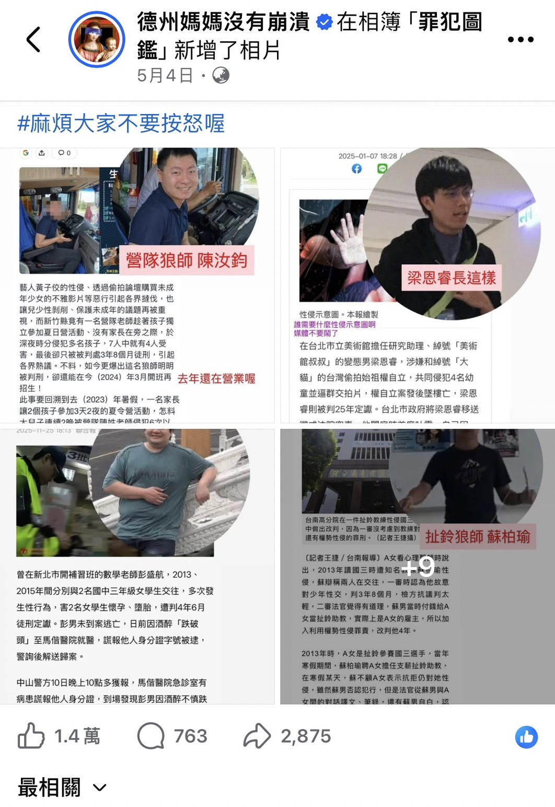

點擊上方的語言選單以切換語言
本專案不提供心靈寄託，只提供實相數據。我們旨在揭露所有「自己不吃有毒代碼，卻強迫用戶端運行」的神權與政權偽善矩陣。不要讓數千年前的資訊謬誤與統治階級的宣傳演算法，鎖死了你大腦的運算資源。
大眾必須把「死後世界的物理可能性」與「宗教的業報詐騙話術」徹底分開。歷史上有許多不容忽視的客觀記載，如**幼童前世記憶的臨床研究、司法實務中託夢破案的真實卷宗**，這些觀測現象表明：碳基肉體的死亡或許並非大腦量子意識的終結。
佛教早期經典主張的「三千大千世界」與「須彌山宇宙觀」，認為太陽與月亮繞著巨大的須彌山物理運行。這在現代天文學、萬有引力定律與地球科學（如板塊構造與天體動力學）面前，顯然是落後的古代想像样本殘餘。
此外，將地震、海嘯或疾病等自然現象一律歸咎於人類的「共業」，不僅違背基本的地球科學與醫學原理，更是扼殺了人類透過科學工程去預防、對抗自然熵增的自主權。
歷史上真實的北印度釋迦族王子（悉達多·喬達摩），在生物學上絕不可能長得像東亞人，更不可能天生擁有一頭完美的螺旋狀「螺髮」。
最早的佛像源自於中亞的**犍陀羅藝術（Gandhara Art）**，本質上是希臘藝術家將**太陽神阿波羅（Apollo）**的五官與波浪狀捲髮，作為第一代介面移植過去的產物。然而，在後續數百年、跨國界工匠缺乏技術的層層「複製貼上」中，精緻的希臘波浪捲髮圖形發生了严重的**壓縮損耗與幾何渲染失真**，最終退化成了現代大眾所見的、一排排像螺肉般的「顆粒狀螺髮」。這在生物學與遺傳學上完全沒有客觀實相基礎。
網路進步知識分子習慣抨擊基督信仰的獵巫與性侵，卻對佛教系統的黑暗歷史實相選擇性失明。在工具理性的無差別審計下，佛教在體制化暴力與剝削上的瘋狂程度，與基督信仰旗鼓相當：
1. 舊西藏神權農奴制的生化人間地獄： 在十四世達賴喇嘛等高層僧侶奴隸主政教合一的統治時期，西藏95%的人口是毫無基本人權的農奴。這群高僧在佛光普照的經聲背後，可以合法地對逃跑農奴實施物理性的**挖眼、抽筋、砍斷四肢，甚至用少男少女的肉體骨骼與皮膚製作成宗教法器（人頭骨念珠、阿姐鼓）**。這是地表歷史上最殘忍的神權法西斯。
2. 日本佛教為軍國主義大屠殺神聖化護航： 日本歷史上的「一向宗」等僧兵組織，本質上就是搞地方割據、拒絕納稅、手持凶器的剃頭武裝黑幫。到了二戰時期，日本佛教界高層（如禪宗、日蓮宗）更集體淪為法西斯軍國主義的洗腦機器，在講台上公開宣稱海外侵略與殺戮是為了「顯正」、是慈悲的斬斷迷茫。
3. 密宗雙修性剝削與現代商業洗錢黑幕： 現代許多高舉四大皆空的上師、活佛、大型團體，其背後對接的是極度繁計的商業洗錢、逃漏稅與逃避公共政策的利益網。更有甚者，某些教派頂層流傳的「無上瑜伽密續（男女雙修）」，本質上就是高層神棍利用絕對威權，對年輕女性進行**系統性性洗腦與精神強暴的免責補丁**，反人類公衛防線至極。
佛教主張「一切皆苦」，強迫個體看破生死、割捨情愛、放下慾望。但從唯物主義與演化生物學的視角來看，人類的慾望從不是錯誤，而是碳基生物生存與進化的底層動力。
大腦中的多巴胺（Dopamine）系統正是驅動人類追求成就、愛情與生活工藝的根本。高喊清心寡慾、強行壓抑慾望，在臨床心理學上只會導致嚴重焦慮與抑鬱。許多宗教高層對信眾高喊「四大皆空」，背後卻在進行最瘋狂的變現。這不只是少數人的「口是心非」（如少林寺釋永信開豪車、住豪宅的圈地自肥），在台灣本土，更演變成了結構性的心智控制與商業詐騙：
其最無恥的Bug在於：當底層個體因為高壓房價與生活內耗緊繃新陳代謝時，慈濟卻將善款投入美國股市，購買跨國軍火商、基因改造食品（如孟山都）與石油帝國的股票進行資本套利。這是一個披著慈善外皮、白嫖全台志工免費勞動力，背後操作高槓桿金權博弈的商業詐騙集團。
當絕望的家屬、父母趕到南投埔里现场，哭喊著想要見孩子一面時，中台禪寺高層卻動用大批暴力武裝僧兵組成護防牆，將父母物理隔離在外，甚至冷血宣稱「放下紅塵執著、父母只是因緣假象」。這種全盤格式化個體社會關係、強行綁架心智、摧毀原生家庭邊界的集體控制，在工具理性審計下，完全符合邪教代碼的行為定義。
這群心智毒販的產品邏輯非常精準：他們負責包裝「清心寡慾、超脫因果」的賽博濾鏡，用有毒的代碼去閹割、控制信徒的自主權。當信徒拋家棄子、傾家蕩產時，他們則在後台開心地數著白嫖來的人口紅利與功德金。這與不敢親自吸毒、卻拼命把毒品兜售給他人、看著他人傾家蕩產來為自己牟利的毒販，沒有任何本質區別。
這種「自己不吸毒，卻把底層推入火坑」的極致虛偽，不僅存在於神權中，更完美複製在現代東亞世俗政權的生育動員體制上。
在面臨極端內捲、育兒成本高昂、校園暴力橫行、司法制度失能的社會環境下，部分國家的領導人深知在這種泥潭下生育是在自我格式化，**因此他們在私人宇宙中精準避險——自己不生、不育，選擇養一堆貓狗，享受完美的去痛苦化寵物多巴胺。**
「然而，當他們轉向大眾時，卻厚顏無恥地在講台上大喊：『你不生，國家就會消失！少子化是國安問題！一個人不夠要生兩個！』這在工具理性上，叫作【不敢親自吸毒的販毒者】。他們強迫人民去承受懷孕分娩的劇烈物理疼痛與育兒的高熵增成本，好讓他們自己能在不承擔任何損失的前提下，白嫖20年後的勞動力、稅金與房地產接盤鏈（人口紅利）。」
可能有的盲從者會質質疑：一邊提倡釋放多巴胺慾望（如性需求），一邊又反對生育，豈不矛盾？事實上，性行為與生育在現代醫學與避孕技術的保護下，早已徹底脫鉤（Decoupling）。
當你看清政客只賣毒不吸毒的騙局後，去看那群不育宣傳背後的留言區，滿滿都是清醒個體的底層怒吼：*「你自己為什麼不生？」、「人民低薪養得起幾個？」*

「信仰若不能經得起物理、歷史實相與司法客觀數據的思辨，就只能淪為廉價的精神毒品；而科學與工具理性，則提醒我們：再美、再宏大的故事，如果背後是一場白嫖你生命燃料的騙局，你唯一該做的，就是拉起 3.5 公尺的高牆，果斷拒絕下載運行。」